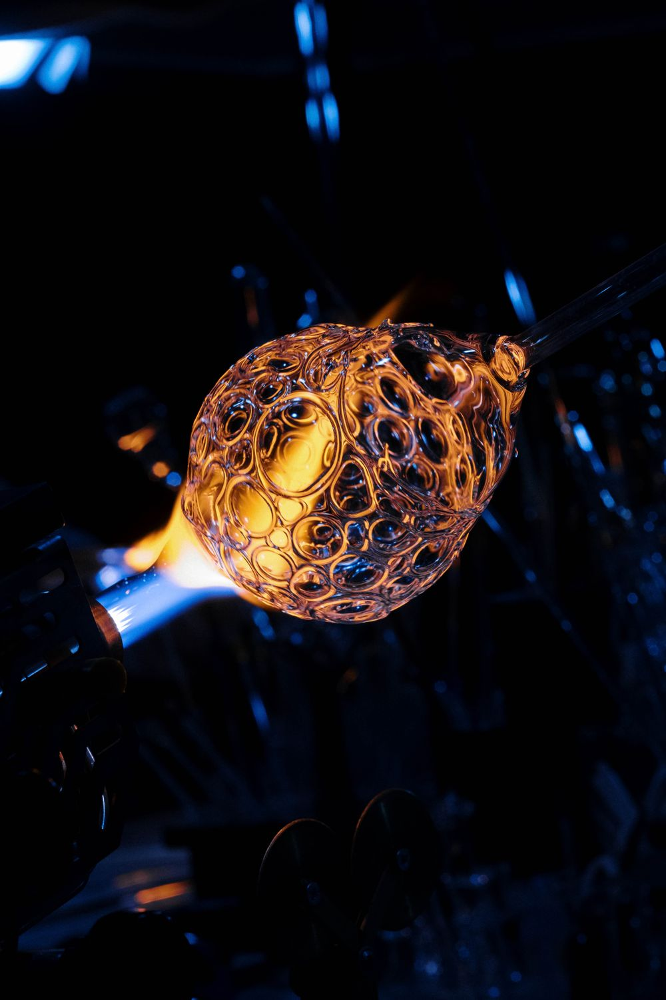
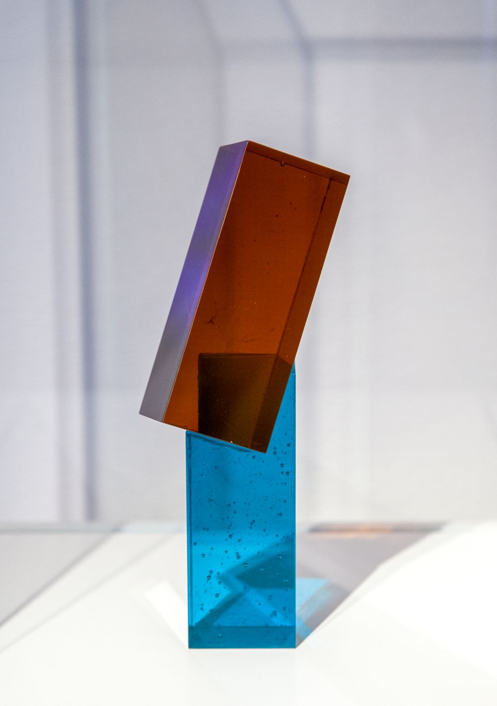
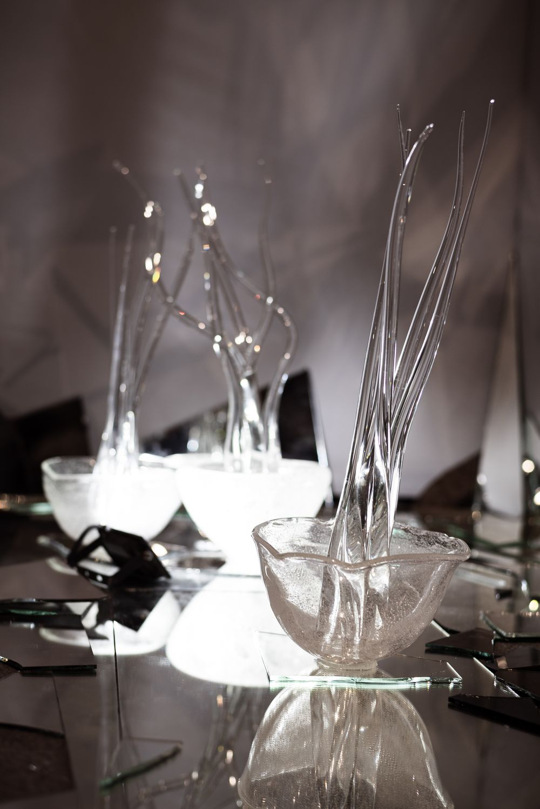

Kiln-cast obsidian, cold-worked until the light stays in it
Glass
Obsidian — Glass Buttes, Oregon
Technique
Kiln-cast, cold-worked
Dimensions
38 × 30 × 12 cm
Year
2026
Available — $9,800
Reference photograph. The piece itself is photographed for its buyer before crating; no photograph is the piece.
“Glass remembers every breath. I try to give it good ones.”
Sanna Reyes — on the bench wall, in pencil

Ember Vessel
The first vessel of the winter bench
Glass
Borosilicate
Technique
Torch-worked
Dimensions
24 × 11 × 11 cm
Year
2025
Sold — Portland, 2026
Reference photograph. This piece broke after delivery and was replaced under the printed terms — its file is Case File 3.

Two Weathers
Two forms, one breath held between them
Glass
Borosilicate
Technique
Torch-worked, in two parts
Dimensions
44 × 18 × 14 cm
Year
2026
Available — $4,300
Reference photograph.

Mirror Study
Made to be looked at twice — once directly, once in reflection
Glass
Borosilicate
Technique
Torch-worked, set on mirror
Dimensions
31 × 31 × 9 cm
Year
2024
Private collection — Seattle
Reference photograph.
Three Vessels
A study for the Nine Rooms series, kept by the studio
Glass
Borosilicate
Technique
Torch-worked
Dimensions
Tallest 34 cm
Year
2026
Available — $2,600
Reference photograph. The series it studied for is Case File 2.
The register
Every piece, its state, its price
Sold pieces stay in the register. A register that shows only what can be bought is a shop window, not a record — and a price that appears only after an email is not a price, it is a negotiation. What is available is priced here, in the open.
Object register — November 2026
Piece
Glass
Year
State
Price
Night Field
Obsidian
2026
Available
$9,800
Two Weathers
Borosilicate
2026
Available
$4,300
Three Vessels
Borosilicate
2026
Available
$2,600
Kiln Light
Borosilicate
2026
In the kiln — annealing, cycle 2 of 3
$2,600 on completion
Ember Vessel
Borosilicate
2025
Sold — Portland
—
Mirror Study
Borosilicate
2024
Private collection — Seattle
—
Basalt Study No. 4
Obsidian
2024
Sold — Bend
—
Ash Line
Obsidian
2023
Sold — Santa Fe
—
Unique pieces are called unique because they are. Series are numbered as made and called series — the word “edition” is not used for work that can be continued.
118
Pieces completed since 2019
23
Lost in the making — 14 to annealing, 9 to thermal shock
6
Exhibitions, group and solo
3
Pieces in public collections
The losses are counted in the same register as the completions. A kiln that never loses a piece is a kiln that is not being asked for much.
The studio
Commissions, planned in the open
A commission is a promise about a calendar, so the calendar is printed here — the same schedule the studio works from, with nothing held back for the email exchange.
The planner below reads these two tables and does its arithmetic in front of you. It will also refuse a date, in writing, when the glass cannot honestly meet it.
Table S1 — the studio schedule
Class
Size
Making days
Hot-work hours
Anneal cycles
Days per cycle
Torch vessel
Small
2
9
1
1
Torch vessel
Medium
4
18
2
2
Torch vessel
Large
7
32
3
2
Kiln-cast form
Small
6
30
2
3
Kiln-cast form
Medium
10
52
3
3
Kiln-cast form
Large
16
84
4
3
Cold-worked sculpture
Small
5
14
1
2
Cold-worked sculpture
Medium
9
26
1
2
Cold-worked sculpture
Large
14
44
2
2
Sizes: Small — up to 20 cm. Medium — 21 to 35 cm. Large — 36 to 50 cm. Beyond 50 cm the schedule is written per piece, and pieces beyond 50 cm travel by art courier or not at all.
Table S2 — finishes, and what they add
Finish
Added days
Raw edge
0
Satin
1
Polished
3
The next open bench start is . Commissions are taken in order; the planner counts from that morning.
The Commission Planner
Piece class
Size
Finish
The booking estimator
The same honesty, in money. These are the studio's printed fees; the estimator adds them in front of you.
Table F1 — piece fees
Class
Small
Medium
Large
Torch vessel
$1,450
$2,600
$4,300
Kiln-cast form
$2,900
$5,400
$9,800
Cold-worked sculpture
$2,200
$4,100
$7,600
Table F2 — finish fees
Finish
Added fee
Raw edge
$0
Satin
$120
Polished
$380
Table F3 — crating and delivery
Item
Fee
Custom crate
$140
Collection from the studio
$0
Insured courier (US)
$260
International carriage
Quoted after crating
Piece class
Size
Finish
Delivery
An estimator is a pricing signal, not a contract. The bench is booked with a 50% deposit; the balance falls due before crating. Full terms are on the About page.
Services
Three ways the studio works
Gallery objects
Unique pieces made for exhibition and for sale through galleries. For galleries and collectors. Glass: obsidian and borosilicate, named piece by piece in the register.
Register open
Interior commissions
Single pieces and small groups made for hotels, houses and quiet public rooms. For owners, architects and interior designers. Glass: kiln-cast obsidian forms and borosilicate vessels.
Bench from 23 Nov 2026
Series work
Numbered series made to a work order — nine vessels for nine niches, not nine “limited editions”. For hotels and practices that need the same hand, repeatedly. Glass: borosilicate, torch-worked.
By enquiry
What moves the price
Size first. A large kiln-cast form spends twelve days annealing — longer in the kiln than a small vessel spends being made. Annealing risk second: every cycle is kiln time, paid whether the piece survives it or not, and the losses in the scoreboard above are priced into the work that survives. Finish third: three days of hand polishing is three days. Crating is always its own line, never folded silently into a piece.
What does not move the price: adjectives.
“She sent the annealing log with the piece — four cycles, one crack, the recast. Collectors are used to mystery. Sanna sends paperwork, and the paperwork is why her prices hold.”
Elena Vasquez — Director, Northlight Gallery, Seattle On Night Field, the hero piece above, 2026
Enquiries
To ask about a piece, write.
By name, if it is in the register — the register is kept current. The contact page carries the form and the direct address.